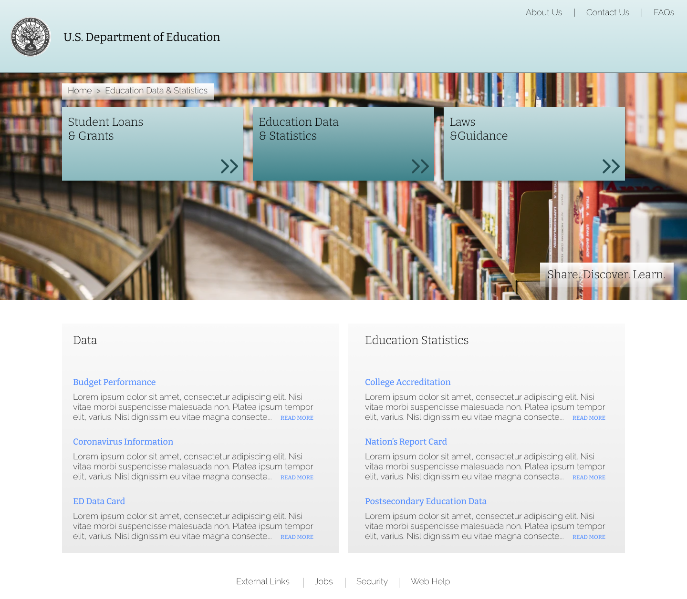
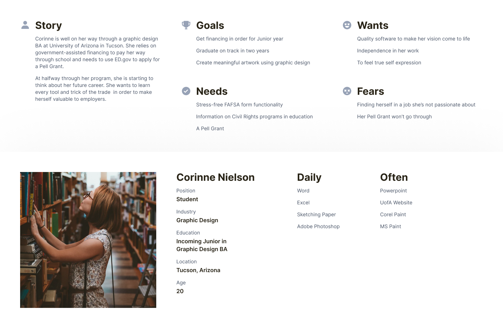
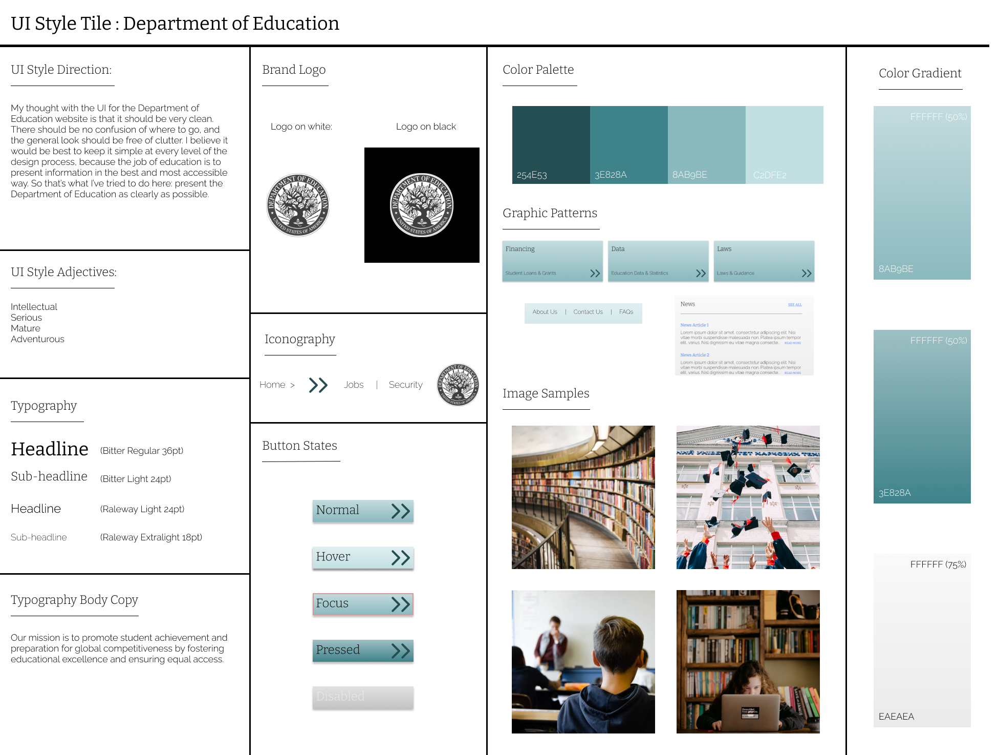
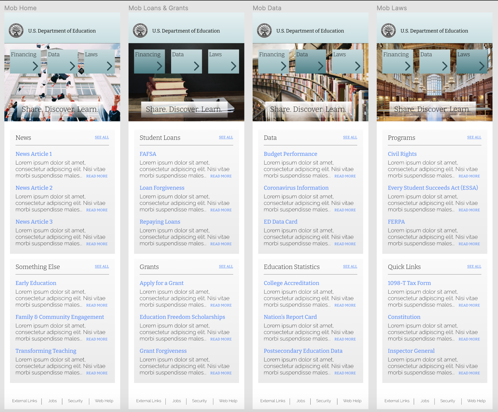

Public education is, in my opinion, the greatest resource the US Government provides. As such, I considered very carefully the audience for this site and the services it provides.
As with virtually any government website, ed.gov was not necessarily designed with usability first in mind. These sites are often built off of ancient early-internet foundations, and suffer from ever-expanding databases that are increasingly difficult to navigate. Naturally the path forward presented itself through interviews and research: Make it easier to find what you’re looking for. This approach led to an updated user journey and site map, which took the existing information architecture and condensed it to its essential elements.
As a general guideline, I wanted to keep the design as clean as possible. I’m not marketing kids’ meals here, this site provides an important government service, and I wanted to make sure every part of my design was in line with that vision. For color, I chose a monochromatic palette of relatively muted shades. For typography, projecting a sophisticated style while retaining readability was the name of the game. In this design exercise, it was also important to ensure everything worked across both desktop and mobile versions. These aesthetic choices are reflected in the style sheet below, which was referenced often throughout design.
As someone more interested in the fun and friendly side of things, getting out of my comfort zone with this project taught me a lot. There would be serious implications to bad design when it came to financial aid resources, so the user flow had to be precise. No time to be cute about it, the buttons should say exactly where they go. For me it's been a pleasure learning the particular design considerations of every project.
